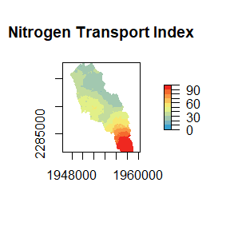

The package nsink implements an approach to estimate relative nitrogen removal along a flow path. This approach is detailed in Kellogg et al. (2010) and builds on peer-reviewed literature in the form of reviews and meta-analyses (i.e., Mayer et al. 2007, Seitzinger et al. 2006, Alexander et al. 2007) to estimate nitrogen (N) removal within three types of landscape sinks – wetlands, streams and lakes – along any given flow path within a HUC12 basin. The nsink package implements this approach, using publicly available spatial data to identify flow paths and estimate N removal in landscape sinks. Removal rates depend on retention time, which is influenced by physical characteristics identified using publicly available spatial data – National Hydrography Dataset Plus (NHDPlus), Soil Survey Geographic Database (SSURGO), the National Land Cover Dataset (NLCD) land cover, and the National Land Cover Dataset (NLCD) impervious surface. Static maps of a specified HUC-12 basin are generated – N Removal Efficiency, N Loading Index, N Transport Index, and N Delivery Index. These maps may be used to inform local decision-making by highlighting areas that are more prone to N “leakiness” and areas that contribute to N removal.
The nsink package provides several functions to set up and run an N-Sink analysis for a specified 12-digit HUC code. All required data are downloaded, prepared for the analysis, HUC-wide nitrogen removal calculated, and flow paths summarized. Additionally, a convenience function that will run all of the required functions for a specified HUC is included. Details on each of the steps are outlined in this vignette.
Get data
The first step in the N-Sink process is to acquire data needed for the analysis. The nsink package utilizes openly available data from several U.S. Federal Government sources. Each dataset uses a 12-digit HUC ID number to select the data for download. The first step is to identify the HUC ID and then download the data.
To identify the HUC ID you can use the nsink_get_huc_id() function which will use a 12-digit HUC name to search all HUCs. Matches are returned as a data frame with an option to return partial or exact matches.
# Get HUC ID - Palmer showing multiple matches
nsink_get_huc_id("Palmer")#> # A tibble: 22 × 3
#> huc_12 huc_12_name state
#> <chr> <chr> <chr>
#> 1 041503050403 Palmer Brook-Raquettte River NY
#> 2 102100090205 City of Palmer-Loup River NE
#> 3 103001011203 Upper Palmer Creek MO
#> 4 103001011204 Palmer Creek-Missouri River MO
#> 5 101402010405 Palmer Creek-Lone Tree Creek NE
#> 6 171003090201 Palmer Creek-Applegate River OR
#> 7 170900080702 Palmer Creek OR
#> 8 170200070402 Palmer Lake WA
#> 9 111401010805 Palmer Lake-Red River OK,TX
#> 10 071200061003 Palmer Creek-Fox River WI
#> # … with 12 more rows
# The Niantic
niantic_huc_id <- nsink_get_huc_id("Niantic River")$huc_12
niantic_huc_id#> [1] "011000030304"With the HUC ID in hand we can now use the nsink_get_data() function to download the required data. All data are from publicly available sources and as of 2022-11-17 no authentication is required to access these sources. The HUC ID is required and users may specify a path for storing the data as well as indicate whether or not to download the data again if they already exist in the data directory. Also note, the file archiver 7-zip is required by nsink_get_data() to extract the NHD Plus files.
# Get data for selected HUC
niantic_download <- nsink_get_data(niantic_huc_id,
data_dir = "nsink_niantic_data")In addition to download the data, the function returns the basic information about your download: HUC ID and download location.
niantic_download#> $huc
#> [1] "011000030304"
#>
#> $data_dir
#> [1] "C:/Users/JHollist/OneDrive - Environmental Protection Agency (EPA)/projects/nsink/nsink_niantic_data/"Prepare the data
Once the data is downloaded there are several additional data processing steps that are required to subset the data just to the HUC and set all data to a common coordinate reference system (CRS).
These include:
- filter out the HUC boundary
- mask all other data sets to the HUC boundary
- convert all columns names to lower case
- create new columns
- harmonize raster extents
- set all data to common CRS
The nsink_prep_data() function will complete all of these processing steps.
It requires a HUC ID, a specified CRS, and a path to a data directory. It returns a list with all required data for subsequent N-Sink analyses.
A quick note on the CRS. In the near future, the preferred way to specify the CRS values will either be with Well-Known Text (WKT) or EPSG Codes. Proj.4 strings will eventually be deprecated. Currently the packages that nsink relies on are at different stages in implementing the changes to PROJ. nsink currently works with all options, but Proj.4 strings are not recomended. This vignette shows examples with EPSG codes.
# EPSG for CONUS Albers Equal Area
aea <- 5072
# Prep data for selected HUC
niantic_data <- nsink_prep_data(niantic_huc_id, projection = aea,
data_dir = "nsink_niantic_data")Calculate removal
The next step in the N-Sink process is to calculate relative nitrogen removal.
Details on how the nitrogen removal estimates are calculated are available in Kellogg et al. (2010). The nsink_calc_removal() function takes the prepared data as an input and returns a list with three items:
-
raster_method: This item contains a raster based approach to calculating removal. Used for the static maps of removal. -
land_removal: This represents land based nitrogen removal which is hydric soils with areas of impervious surface removed. -
network_removal: This contains removal along the NHD Plus flow network.
Removal is calculated separately for streams and waterbodies (e.g. lakes and reservoirs).
# Calculate removal from prepped data
niantic_removal <- nsink_calc_removal(niantic_data)Generate and summarize flowpaths
A useful part of the N-Sink approach is the ability to summarize that removal along the length of a specified flowpath. The nsink package provides two functions that facilitate this process. The nsink_generate_flowpath() function takes a point location as an sf object and the prepped data (generated by nsink_prep_data()) as input and returns an sf LINESTRING of the flowpath starting from the input point location and terminating at the furthest downstream location in the input NHD Plus. The flowpath on land is generated from a flow direction grid. Once that flowpath intersects the stream network, flow is determined by flow along the NHD Plus stream network. First, create the sf POINT object.
# Load up the sf package
library(sf)
# Starting point
pt <- c(1948121, 2295822)
start_loc <- st_sf(st_sfc(st_point(c(pt)), crs = aea))You may also determine your point location interactively by plotting your data and using the locator() function . First create a simple plot.
# Create a simple plot
plot(st_geometry(niantic_data$huc))
plot(st_geometry(niantic_data$lakes), add = T, col = "darkblue")
plot(st_geometry(niantic_data$streams), add = T, col = "blue")With the map made, you can use that to interactively select a location and use the x and y to create the sf POINT object.
# Select location on map for starting point
pt <- unlist(locator(n = 1))
# convert to sf POINT
start_loc_inter <- st_sf(st_sfc(st_point(pt), crs = aea))With a point identified, we can use that as the starting location for our flowpath.
niantic_fp <- nsink_generate_flowpath(start_loc, niantic_data)The returned value has both the flowpath_ends, the portion of the flowpath on the land which is created using the flow direction grid, and the flowpath_network which is the portion of the flowpath from the NHD Plus network that occur after the upstream flowpath_ends intersect the network.
niantic_fp#> $flowpath_ends
#> Simple feature collection with 2 features and 0 fields
#> Geometry type: LINESTRING
#> Dimension: XY
#> Bounding box: xmin: 1948003 ymin: 2281809 xmax: 1958233 ymax: 2296449
#> CRS: +proj=aea +lat_0=23 +lon_0=-96 +lat_1=29.5 +lat_2=45.5 +x_0=0 +y_0=0 +ellps=GRS80 +towgs84=0,0,0,0,0,0,0 +units=m +no_defs
#> fp_ends
#> 1 LINESTRING (1948123 2295819...
#> 2 LINESTRING (1957513 2283579...
#>
#> $flowpath_network
#> Simple feature collection with 30 features and 18 fields
#> Geometry type: LINESTRING
#> Dimension: XY
#> Bounding box: xmin: 1949097 ymin: 2283213 xmax: 1957637 ymax: 2296345
#> CRS: +proj=aea +lat_0=23 +lon_0=-96 +lat_1=29.5 +lat_2=45.5 +x_0=0 +y_0=0 +ellps=GRS80 +towgs84=0,0,0,0,0,0,0 +units=m +no_defs
#> First 10 features:
#> stream_comid fdate resolution gnis_id gnis_name lengthkm
#> 1 6170640 2008-07-17 Medium 208394 Latimer Brook 0.658
#> 2 6170090 1999-09-06 Medium 208394 Latimer Brook 0.130
#> 3 6170644 2008-07-17 Medium 208394 Latimer Brook 0.307
#> 4 6170096 1999-09-06 Medium 208394 Latimer Brook 1.241
#> 5 6170966 2008-07-17 Medium 208394 Latimer Brook 0.148
#> 6 6170652 2008-07-17 Medium 208394 Latimer Brook 0.169
#> 7 6170100 1999-09-06 Medium 208394 Latimer Brook 0.071
#> 8 6170658 2008-07-17 Medium 208394 Latimer Brook 0.268
#> 9 6170664 2008-07-17 Medium 208394 Latimer Brook 0.290
#> 10 6170122 1999-09-06 Medium 208394 Latimer Brook 1.212
#> reachcode flowdir lake_comid ftype fcode shape_leng
#> 1 01100003000098 With Digitized 6169112 ArtificialPath 55800 0.006702425
#> 2 01100003000097 With Digitized 0 StreamRiver 46006 0.001281976
#> 3 01100003000097 With Digitized 6169134 ArtificialPath 55800 0.003591168
#> 4 01100003000097 With Digitized 0 StreamRiver 46006 0.013000742
#> 5 01100003000097 With Digitized 6169152 ArtificialPath 55800 0.001734513
#> 6 01100003000096 With Digitized 6169152 ArtificialPath 55800 0.001765153
#> 7 01100003000096 With Digitized 0 StreamRiver 46006 0.000853676
#> 8 01100003000796 With Digitized 6169150 ArtificialPath 55800 0.002886813
#> 9 01100003000797 With Digitized 6169150 ArtificialPath 55800 0.002836633
#> 10 01100003000094 With Digitized 0 StreamRiver 46006 0.012087397
#> enabled gnis_nbr totma fromnode tonode stream_order
#> 1 True 0 257.19887393 150029595 150029459 1
#> 2 True 0 0.01071115 150029459 150029597 1
#> 3 True 0 12.68401556 150029597 150029461 1
#> 4 True 0 0.05086744 150029461 150029733 1
#> 5 True 0 1.29543583 150029733 150029601 1
#> 6 True 0 1.47924767 150029601 150029463 2
#> 7 True 0 0.00302952 150029463 150029604 2
#> 8 True 0 8.76143527 150029604 150029607 2
#> 9 True 0 9.48065757 150029607 150029468 2
#> 10 True 0 0.05996156 150029468 150029471 2
#> geometry
#> 1 LINESTRING (1949097 2296345...
#> 2 LINESTRING (1949129 2296257...
#> 3 LINESTRING (1949211 2296168...
#> 4 LINESTRING (1949488 2296233...
#> 5 LINESTRING (1950416 2295753...
#> 6 LINESTRING (1950556 2295764...
#> 7 LINESTRING (1950689 2295680...
#> 8 LINESTRING (1950756 2295705...
#> 9 LINESTRING (1950974 2295603...
#> 10 LINESTRING (1950975 2295347...With a flowpath generated we can summarize the relative nitrogen removal along that flowpath with the nsink_summarize_flowpath() function. It takes the flowpath and removal as input. A data frame is returned with each segment identified by type, the percent removal associated with that segment, and relative removal. Total relative removal is 100 - minimum of the n_out column.
niantic_fp_removal <- nsink_summarize_flowpath(niantic_fp, niantic_removal)
niantic_fp_removal
100-min(niantic_fp_removal$n_out)#> # A tibble: 26 × 5
#> segment_type length percent_removal n_in n_out
#> <chr> <dbl> <dbl> <dbl> <dbl>
#> 1 Hydric 154 2.56 100 97.4
#> 2 No Removal 1418 0 97.4 97.4
#> 3 Lake/Pond 658 54.8 97.4 44
#> 4 Stream 130 0.014 44 44
#> 5 Lake/Pond 307 18.8 44 35.7
#> 6 Stream 1241 0.051 35.7 35.7
#> 7 Lake/Pond 317 6.71 35.7 33.3
#> 8 Stream 71 0.003 33.3 33.3
#> 9 Lake/Pond 558 34.1 33.3 22
#> 10 Stream 1212 0.039 22 22
#> # … with 16 more rows#> [1] 86.9Static maps
Individual flow paths are useful for specific applications, but often it is more useful to look at removal patterns across the landscape. The nsink_generate_static_maps() function provides these HUC wide rasters.
Required inputs are the prepped data, removal raster, and sampling density.
The function returns four separate rasters.
-
removal_effic: Landscape wide estimate of relative nitrogen removal percentage. -
loading_idx: An index of relative nitrogen loads by land cover class derived from published sources -
transport_idx: Relative nitrogen transport for a sample of all possible flowpaths in a given HUC. This is an expensive computational task, sonsinkgenerates a removal hotspot map based on a sample of flowpaths and the final hotspot map is interpolated from these samples and referred to as the nitrogen transport index. Thesamp_densityargument controls the number of sample flowpaths generated.
-
delivery_idx: The delivery index is the combination of the loading index and the transport index It represents which areas of the landscape are delivering the most nitrogen to the outflow of the watershed.
niantic_static_maps <- nsink_generate_static_maps(niantic_data, niantic_removal,
900)And with these static maps made, you can plot them quickly with nsink_plot() and sepcifying which plot you would like to see with the map argument which can be “removal”, “transport”, or “delivery”.
An example of nsink_plot() is below.
nsink_plot(niantic_static_maps, "transport")
Convenience function: Build it all!
The workflow described above includes all the basic functionality. Some users may wish to use nsink to calculate the base layers for an N-Sink analysis and then build an application outside of R. A convenience function that downloads all data, prepares, calculates removal, and generates static maps has been included to facilitate this type of analysis. The nsink_build() function requires a HUC ID, coordinate reference system, and sampling density. An output folder is also needed but has a default location. Optional arguments for forcing a new download and playing a sound to signal when the build has finished. Nothing returns to R, but all prepped data files and .tif files are written into the output folder for use in other applications.
niantic_huc_id <- nsink_get_huc_id("Niantic River")$huc_12
aea <- 5072
nsink_build(niantic_huc_id, aea, samp_dens = 900)References
Alexander, R. B., E. W. Boyer, R. A. Smith, G. E. Schwarz, and R. B. Moore. 2007. The role of headwater streams in downstream water quality 1. JAWRA Journal of the American Water Resources Association 43:41–59.
Kellogg, D., A. J. Gold, S. Cox, K. Addy, and P. V. August. 2010. A geospatial approach for assessing denitrification sinks within lower-order catchments. Ecological Engineering 36:1596–1606.
Mayer, P. M., S. K. Reynolds, M. D. McCutchen, and T. J. Canfield. 2007. Meta-analysis of nitrogen removal in riparian buffers. Journal of environmental quality 36:1172–1180.
Seitzinger, S., J. A. Harrison, J. Böhlke, A. Bouwman, R. Lowrance, B. Peterson, C. Tobias, and G. V. Drecht. 2006. Denitrification across landscapes and waterscapes: A synthesis. Ecological applications 16:2064–2090.